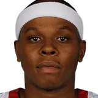

His best final NBA finish was #3 of 29, with the 1999-00 Portland Trail Blazers. In his 878 games for 4 teams over 13 seasons they went 422–456 (48.1%), −34 games under .500, with an average final finish of 15.4.
Jump to: Record by opponent · Season by season · Teammate help
Compare Damon Stoudamire with…
Suggested, same era and similar teammate help:

Final NBA finish, season by season
Title Finals Other playoffs Missed playoffs. #1 = champion; the dashed line is last place that season. Each point opens that season's final standings.
All 29 teams ranked in 1999-00, his best finish (#3)Teammate help
 Tim Duncan5.01 season
Tim Duncan5.01 season Manu Ginobili2.51 season
Manu Ginobili2.51 season Rasheed Wallace2.02 seasons
Rasheed Wallace2.02 seasons
Career
Career records (W–L, W − L, with and without) include 2026-27 games through Nov. 21, 2026; season counts and finishes are through 2025-26. Each card opens its board in the same scope. How we count.

With and without his teammates
His 12 teammates with the most regular-season games together. "Together" is the team's record in the games both played for it; "Without him" is the team's record in the games Damon Stoudamire played for that team while the teammate was on it (between the teammate's first and last game for the team, the appearance span) and the teammate did not play. Fewer than 20 games without him: no gap. Games through Nov. 21, 2026. How we count.
- Rasheed Wallace
 Portland 1997-98 to 2003-04
Portland 1997-98 to 2003-04- Together
- 246–147 62.6%
- Without him
- 10–11 47.6%
- Gap
- 15.0 points lower
 Dale DavisPortland 2000-01 to 2003-04
Dale DavisPortland 2000-01 to 2003-04- Together
- 158–126 55.6%
- Without him
- 9–3 75.0%
- Gap
- Too few games without him

Bonzi WellsPortland 1998-99 to 2003-04- Together
- 174–105 62.4%
- Without him
- 51–22 69.9%
- Gap
- 7.5 points higher
 Ruben PattersonPortland 2001-02 to 2004-05
Ruben PattersonPortland 2001-02 to 2004-05- Together
- 134–134 50.0%
- Without him
- 8–16 33.3%
- Gap
- 16.7 points lower
- Arvydas SabonisPortland 1997-98 to 2000-01; Portland 2002-03
- Together
- 160–85 65.3%
- Without him
- 22–15 59.5%
- Gap
- 5.8 points lower
 Scottie PippenPortland 1999-00 to 2002-03
Scottie PippenPortland 1999-00 to 2002-03- Together
- 154–88 63.6%
- Without him
- 30–22 57.7%
- Gap
- 5.9 points lower
 Derek AndersonPortland 2001-02 to 2004-05
Derek AndersonPortland 2001-02 to 2004-05- Together
- 114–102 52.8%
- Without him
- 25–39 39.1%
- Gap
- 13.7 points lower
 Zach RandolphPortland 2001-02 to 2004-05
Zach RandolphPortland 2001-02 to 2004-05- Together
- 108–108 50.0%
- Without him
- 32–23 58.2%
- Gap
- 8.2 points higher
- Stacey AugmonPortland 1997-98 to 2000-01
- Together
- 128–61 67.7%
- Without him
- 27–16 62.8%
- Gap
- 4.9 points lower
- Greg AnthonyPortland 1998-99 to 2000-01
- Together
- 129–57 69.4%
- Without him
- 13–10 56.5%
- Gap
- 12.8 points lower
 Walt Williams
Walt Williams Toronto 1996-97 to 1997-98; Portland 1997-98 to 1998-99
Toronto 1996-97 to 1997-98; Portland 1997-98 to 1998-99- Together
- 80–90 47.1%
- Without him
- 9–23 28.1%
- Gap
- 18.9 points lower
 Steve SmithPortland 1999-00 to 2000-01
Steve SmithPortland 1999-00 to 2000-01- Together
- 106–53 66.7%
- Without him
- 1–0 100.0%
- Gap
- Too few games without him
Latest completed seasons
Season by season
Newest first; every header sorts. Final NBA finish is the team's rank among all teams that season (#1 = champion) and opens that season's standings. "Without him" uses the team-season window; the span line counts only the games between his first and last game for the team.
| 2007-08 | #27 of 30 | 22–60 26.8% | Missed playoffs | 29 of 82 | 8–21 27.6% | 5–13 27.8%span: 0–1, gap +27.6 | −0.2 | |
| 2007-08 | #4 of 30 | 56–26 68.3% | Lost conf finals 1–4 | 31 of 82 | 23–8 74.2% | 12–10 54.5%span: 4–2, gap +7.5 | +19.6 | |
| 2006-07 | #30 of 30 | 22–60 26.8% | Missed playoffs | 62 of 82 | 15–47 24.2% | 7–13 35.0%span: 2–6, gap −0.8 | −10.8 | |
| 2005-06 | #9 of 30 | 49–33 59.8% | Lost 1st round 0–4 | 27 of 82 | 17–10 63.0% | 32–23 58.2%span: 1–0, gap −37.0 | +4.8 | |
| 2004-05 | #26 of 30 | 27–55 32.9% | Missed playoffs | 81 of 82 | 26–55 32.1% | 1–0 100.0%span: 1–0, gap −67.9 | −67.9 | |
| 2003-04 | #18 of 29 | 41–41 50.0% | Missed playoffs | 82 of 82 | 41–41 50.0% | N/A | N/A | |
| 2002-03 | #10 of 29 | 50–32 61.0% | Lost 1st round 3–4 | 59 of 82 | 32–27 54.2% | 18–5 78.3%span: 18–5, gap −24.0 | −24.0 | |
| 2001-02 | #10 of 29 | 49–33 59.8% | Lost 1st round 0–3 | 75 of 82 | 45–30 60.0% | 4–3 57.1%span: 4–3, gap +2.9 | +2.9 | |
| 2000-01 | #11 of 29 | 50–32 61.0% | Lost 1st round 0–3 | 82 of 82 | 50–32 61.0% | N/A | N/A | |
| 1999-00 | #3 of 29 | 59–23 72.0% | Lost conf finals 3–4 | 78 of 82 | 57–21 73.1% | 2–2 50.0%span: 2–2, gap +23.1 | +23.1 | |
| 1998-99 | #3 of 29 | 35–15 70.0% | Lost conf finals 0–4 | 50 of 50 | 35–15 70.0% | N/A | N/A | |
| 1997-98 | #28 of 29 | 16–66 19.5% | Missed playoffs | 49 of 82 | 11–38 22.4% | 0–2 0.0%span: N/A, gap N/A | +22.4 | |
| 1997-98 | #13 of 29 | 46–36 56.1% | Lost 1st round 1–3 | 22 of 82 | 13–9 59.1% | 5–7 41.7%span: 3–7, gap +29.1 | +17.4 | |
| 1996-97 | #21 of 29 | 30–52 36.6% | Missed playoffs | 81 of 82 | 30–51 37.0% | 0–1 0.0%span: 0–1, gap +37.0 | +37.0 | |
| 1995-96 | #27 of 29 | 21–61 25.6% | Missed playoffs | 70 of 82 | 19–51 27.1% | 2–10 16.7%span: 0–2, gap +27.1 | +10.5 |
On/off, starts and close games
From the lineup data, 1996-97 on. On/off is net points per 100 possessions with him on the floor minus off, a different unit from the win-rate gaps. Started and off the bench are team records in those games; close games are those within 5 points in the last 5 minutes with him on the floor.
| 2007-08 | +3.3 | 8–21 27.6% | N/A | 3–4 42.9% | |
| 2007-08 | −19.8 | 4–0 100.0% | 19–8 70.4% | 3–1 75.0% | |
| 2006-07 | −4.4 | 12–39 23.5% | 3–8 27.3% | 6–14 30.0% | |
| 2005-06 | +0.1 | 17–10 63.0% | N/A | 7–5 58.3% | |
| 2004-05 | +1.5 | 22–48 31.4% | 4–7 36.4% | 16–31 34.0% | |
| 2003-04 | −3.7 | 41–41 50.0% | N/A | 28–22 56.0% | |
| 2002-03 | +4.3 | 12–15 44.4% | 20–12 62.5% | 7–9 43.8% | |
| 2001-02 | +3.0 | 42–29 59.2% | 3–1 75.0% | 28–15 65.1% | |
| 2000-01 | +7.8 | 50–32 61.0% | N/A | 21–19 52.5% | |
| 1999-00 | −0.9 | 57–21 73.1% | N/A | 18–13 58.1% | |
| 1998-99 | −14.3 | 35–15 70.0% | N/A | 13–11 54.2% | |
| 1997-98 | −5.2 | 11–38 22.4% | N/A | 9–21 30.0% | |
| 1997-98 | +18.3 | 13–9 59.1% | N/A | 4–7 36.4% | |
| 1996-97 | +0.6 | 30–51 37.0% | N/A | 19–27 41.3% |
Teammate help by season
Two separate numbers per season, each with every teammate that adds to it. Help this season = Teammates Score points for honors won that season by teammates who shared a game with him. Help coming in = the same teammates' honors from the season before. How help works.
- 2007-08
 Memphis
Juan Carlos Navarro All-Rookie 2nd0.12529 g
Memphis
Juan Carlos Navarro All-Rookie 2nd0.12529 g
Help this season: 0.125 = 0.125 Juan Carlos Navarro
More: help coming in and other teammates
Help coming in (teammates' honors the season before): 0.25 = 0.25 Rudy Gay
Other teammates (no honors that season): Mike Miller 29 g, Kyle Lowry 29 g, Rudy Gay 29 g, Casey Jacobsen 26 g, Stromile Swift 26 g, Pau Gasol 25 g, Hakim Warrick 25 g, Darko Milicic 21 g, Andre Brown 17 g, Tarence Kinsey 11 g, Brian Cardinal 7 g, Mike Conley 6 g, Jeremy Richardson 2 g
- 2007-08
 San Antonio
Tim Duncan All-NBA 2ndAll-StarAll-Def 1st531 gManu Ginobili All-NBA 3rdSixth Man2.529 g
San Antonio
Tim Duncan All-NBA 2ndAll-StarAll-Def 1st531 gManu Ginobili All-NBA 3rdSixth Man2.529 g Bruce Bowen All-Def 1st130 g
Bruce Bowen All-Def 1st130 g
Help this season: 8.5 = 5 Tim Duncan + 2.5 Manu Ginobili + 1 Bruce Bowen
More: help coming in and other teammates
Help coming in (teammates' honors the season before): 18 = 11 Tony Parker + 6 Tim Duncan + 1 Bruce Bowen
Other teammates (no honors that season): Michael Finley 31 g, Jacque Vaughn 31 g, Fabricio Oberto 31 g, Ime Udoka 29 g, Tony Parker 24 g, Matt Bonner 23 g, Kurt Thomas 22 g, Robert Horry 19 g, Francisco Elson 5 g, DerMarr Johnson 2 g, Bobby Jones 2 g, Brent Barry 1 g
- 2006-07Memphis
 Rudy Gay All-Rookie 1st0.2562 g
Rudy Gay All-Rookie 1st0.2562 g
Help this season: 0.25 = 0.25 Rudy Gay
More: help coming in and other teammates
Help coming in (teammates' honors the season before): 1.5 = 1 Pau Gasol + 0.5 Mike Miller
Other teammates (no honors that season): Mike Miller 62 g, Hakim Warrick 62 g, Dahntay Jones 58 g, Chucky Atkins 56 g, Lawrence Roberts 45 g, Pau Gasol 43 g, Alexander Johnson 42 g, Stromile Swift 36 g, Tarence Kinsey 32 g, Eddie Jones 28 g, Brian Cardinal 23 g, Iakovos Tsakalidis 20 g, Junior Harrington 14 g, Kyle Lowry 10 g and 2 more
- 2005-06Memphis
 Pau Gasol All-Star127 g
Pau Gasol All-Star127 g Mike Miller Sixth Man0.525 g
Mike Miller Sixth Man0.525 g
Help this season: 1.5 = 1 Pau Gasol + 0.5 Mike Miller
More: help coming in and other teammates
Help coming in (teammates' honors the season before): 0
Other teammates (no honors that season): Lorenzen Wright 26 g, Shane Battier 26 g, Eddie Jones 25 g, Dahntay Jones 24 g, Antonio Burks 21 g, Hakim Warrick 21 g, Bobby Jackson 19 g, Lawrence Roberts 16 g, Iakovos Tsakalidis 15 g, Brian Cardinal 6 g, Anthony Roberson 5 g, John Thomas 2 g
- 2004-05PortlandHelp this season: 0, no honored teammate
More: help coming in
Help coming in (teammates' honors the season before): 0.75 = 0.5 Theo Ratliff + 0.25 Zach Randolph
- 2003-04Portland
 Theo Ratliff All-Def 2nd0.532 gZach Randolph MIP0.2581 g
Theo Ratliff All-Def 2nd0.532 gZach Randolph MIP0.2581 g
Help this season: 0.75 = 0.5 Theo Ratliff + 0.25 Zach Randolph
More: help coming in and other teammates
Help coming in (teammates' honors the season before): 0
Other teammates (no honors that season): Dale Davis 76 g, Ruben Patterson 73 g, Qyntel Woods 62 g, Derek Anderson 51 g, Rasheed Wallace 45 g, Darius Miles 42 g, Vladimir Stepania 42 g, Jeff McInnis 39 g, Wesley Person 33 g, Shareef Abdur-Rahim 32 g, Eddie Gill 22 g, Dan Dickau 20 g, Omar Cook 17 g, Matt Carroll 13 g and 7 more
- 2002-03PortlandHelp this season: 0, no honored teammate
- 2001-02PortlandHelp this season: 0, no honored teammate
More: help coming in
Help coming in (teammates' honors the season before): 1 = 1 Rasheed Wallace
- 2000-01Portland
Rasheed Wallace All-Star177 g
Help this season: 1 = 1 Rasheed Wallace
More: help coming in and other teammates
Help coming in (teammates' honors the season before): 2.5 = 1 Dale Davis + 1 Rasheed Wallace + 0.5 Scottie Pippen
Other teammates (no honors that season): Dale Davis 81 g, Steve Smith 81 g, Bonzi Wells 75 g, Shawn Kemp 68 g, Stacey Augmon 66 g, Scottie Pippen 64 g, Arvydas Sabonis 61 g, Greg Anthony 58 g, Detlef Schrempf 26 g, Rod Strickland 21 g, Will Perdue 13 g, Antonio Harvey 12 g, Erick Barkley 8 g, Gary Grant 4 g
- 1999-00Portland
Rasheed Wallace All-Star177 gScottie Pippen All-Def 2nd0.578 g
Help this season: 1.5 = 1 Rasheed Wallace + 0.5 Scottie Pippen
More: help coming in and other teammates
Help coming in (teammates' honors the season before): 1 = 1 Scottie Pippen
Other teammates (no honors that season): Greg Anthony 78 g, Steve Smith 78 g, Detlef Schrempf 73 g, Jermaine O'Neal 67 g, Arvydas Sabonis 63 g, Bonzi Wells 63 g, Brian Grant 60 g, Stacey Augmon 55 g, Antonio Harvey 19 g, Joe Kleine 7 g, Gary Grant 2 g
- 1998-99PortlandHelp this season: 0, no honored teammate
- 1997-98TorontoHelp this season: 0, no honored teammate
More: help coming in
Help coming in (teammates' honors the season before): 0.25 = 0.25 Marcus Camby
- 1997-98PortlandHelp this season: 0, no honored teammate
- 1996-97Toronto
 Marcus Camby All-Rookie 1st0.2562 g
Marcus Camby All-Rookie 1st0.2562 g
Help this season: 0.25 = 0.25 Marcus Camby
More: help coming in and other teammates
Help coming in (teammates' honors the season before): 0
Other teammates (no honors that season): Doug Christie 80 g, Popeye Jones 78 g, Walt Williams 72 g, Sharone Wright 59 g, Carlos Rogers 55 g, Clifford Rozier 41 g, Acie Earl 37 g, Hubert Davis 35 g, John Long 32 g, Shawn Respert 27 g, Donald Whiteside 26 g, Reggie Slater 26 g, Oliver Miller 19 g, Zan Tabak 13 g and 5 more
- 1995-96TorontoHelp this season: 0, no honored teammate
More: help coming in
Help coming in (teammates' honors the season before): 0.125 = 0.125 Sharone Wright
Record against each opponent
- Best regular-season record against one franchise: 25–13 (65.8%) against the Golden State Warriors in 38 games.
- Toughest regular-season record against one franchise: 8–20 (28.6%) against the Detroit Pistons in 28 games.
- Most playoff series against one franchise: 5 against the Los Angeles Lakers, 0–5 in series and 4–14 in games.
Regular season, through 2025-26 (2026-27 games not included): 878 games, 422–456, against 30 franchises.
Grouped by franchise (named as today); game lists keep each team's name that season. Filters and the tab are kept in the URL, so a filtered view can be shared.
| Games list | |||||||
|---|---|---|---|---|---|---|---|
| 43 | 20–23 | 46.5% | −3 | 0–1 (3–4 in games) | 1995-96 to 2007-08 | ||
| 42 | 18–24 | 42.9% | −6 | N/A | 1995-96 to 2007-08 | ||
| 40 | 15–25 | 37.5% | −10 | 2–0 (8–3 in games) | 1995-96 to 2007-08 | ||
| 39 | 12–27 | 30.8% | −15 | 0–1 (0–4 in games) | 1995-96 to 2007-08 | ||
| 38 | 15–23 | 39.5% | −8 | N/A | 1995-96 to 2007-08 | ||
| 38 | 25–13 | 65.8% | +12 | N/A | 1995-96 to 2007-08 | ||
| 38 | 22–16 | 57.9% | +6 | N/A | 1995-96 to 2007-08 | ||
| 38 | 17–21 | 44.7% | −4 | 2–0 (4–1 in games) | 1995-96 to 2007-08 | ||
| 37 | 17–20 | 45.9% | −3 | 0–5 (4–14 in games) | 1995-96 to 2007-08 | ||
| 36 | 19–17 | 52.8% | +2 | 1–0 (3–1 in games) | 1995-96 to 2007-08 | ||
| 36 | 21–15 | 58.3% | +6 | N/A | 1995-96 to 2007-08 | ||
| 33 | 19–14 | 57.6% | +5 | N/A | 1995-96 to 2007-08 | ||
| 31 | 9–22 | 29.0% | −13 | N/A | 1995-96 to 2007-08 | ||
| 29 | 15–14 | 51.7% | +1 | N/A | 1995-96 to 2004-05 | ||
| 28 | 8–20 | 28.6% | −12 | N/A | 1995-96 to 2007-08 | ||
| 27 | 12–15 | 44.4% | −3 | N/A | 1995-96 to 2007-08 | ||
| 26 | 14–12 | 53.8% | +2 | N/A | 1995-96 to 2007-08 | ||
| 25 | 16–9 | 64.0% | +7 | N/A | 1995-96 to 2007-08 | ||
| 25 | 11–14 | 44.0% | −3 | N/A | 1995-96 to 2007-08 | ||
| 25 | 16–9 | 64.0% | +7 | N/A | 1995-96 to 2007-08 | ||
| 25 | 16–9 | 64.0% | +7 | N/A | 1995-96 to 2007-08 | ||
| 24 | 9–15 | 37.5% | −6 | N/A | 1995-96 to 2007-08 | ||
| 24 | 13–11 | 54.2% | +2 | N/A | 1995-96 to 2007-08 | ||
| 24 | 15–9 | 62.5% | +6 | N/A | 1995-96 to 2007-08 | ||
| 22 | 12–10 | 54.5% | +2 | N/A | 1995-96 to 2007-08 | ||
| 21 | 10–11 | 47.6% | −1 | N/A | 1995-96 to 2005-06 | ||
| 20 | 6–14 | 30.0% | −8 | N/A | 1995-96 to 2007-08 | ||
| 17 | 11–6 | 64.7% | +5 | N/A | 1999-00 to 2007-08 | ||
| 15 | 6–9 | 40.0% | −3 | N/A | 1995-96 to 2007-08 | ||
| 12 | 3–9 | 25.0% | −6 | 1–0 (1–3 in games) | 2003-04 to 2007-08 |
Rows add up to his career record in his games. A playoff series counts when he played in it; early round-robin games show as games only. How we count.
Playoffs, with and without him
| 2007-08 | Lost in the conference finals 1–4 to | #4 of 30 | 7 of 17 | 2–5 28.6% | 7–3 70.0% | −41.4 | |
| 2002-03 | Lost in the first round 3–4 to | #10 of 29 | 7 of 7 | 3–4 42.9% | N/A | N/A | |
| 2001-02 | Lost in the first round 0–3 to | #10 of 29 | 3 of 3 | 0–3 0.0% | N/A | N/A | |
| 2000-01 | Lost in the first round 0–3 to | #11 of 29 | 3 of 3 | 0–3 0.0% | N/A | N/A | |
| 1999-00 | Lost in the conference finals 3–4 to | #3 of 29 | 16 of 16 | 10–6 62.5% | N/A | N/A | |
| 1998-99 | Lost in the conference finals 0–4 to | #3 of 29 | 13 of 13 | 7–6 53.8% | N/A | N/A | |
| 1997-98 | Lost in the first round 1–3 to | #13 of 29 | 4 of 4 | 1–3 25.0% | N/A | N/A |
Arrival and departure
Team wins per 82 games the season before he arrived vs his first season there, and his last season vs the season after he left. He leaves a team only when his next season with games is for another team (or he never plays again); whole seasons he missed and came back from are one "Missed" row with the team's record without him. Per 82 so short seasons compare fairly. These are team records, not a measure of what he did.
| Left | after 2007-08 | 2007-08: 22–60 22.0 per 82 | 2008-09: 24–58 24.0 per 82 without him | +2.0 wins | |
| Left | after 2007-08 | 2007-08: 56–26 56.0 per 82 | 2008-09: 54–28 54.0 per 82 without him | −2.0 wins | |
| Arrived | 2007-08 | 2006-07: 58–24 58.0 per 82 | 2007-08: 56–26 56.0 per 82 | −2.0 wins | |
| Arrived | 2005-06 | 2004-05: 45–37 45.0 per 82 | 2005-06: 49–33 49.0 per 82 | +4.0 wins | |
| Left | after 2004-05 | 2004-05: 27–55 27.0 per 82 | 2005-06: 21–61 21.0 per 82 without him | −6.0 wins | |
| Left | after 1997-98 | 1997-98: 16–66 16.0 per 82 | 1998-99: 23–27 37.7 per 82 without him | +21.7 wins | |
| Arrived | 1997-98 | 1996-97: 49–33 49.0 per 82 | 1997-98: 46–36 46.0 per 82 | −3.0 wins | |
| Debut | 1995-96 | N/A | 1995-96: 21–61 21.0 per 82 | N/A |
Seasons split between teams
Each team's record before his first game for it, inside his window (games with and without him) and after his last game, in the seasons he played for two or more teams.
| 2007-08 | Oct. 31, 2007 to Dec. 30, 2007 | N/A | 13–34 27.7% | 9–26 25.7% | 29 | |
| 2007-08 | Feb. 5, 2008 to April 16, 2008 | 21–8 72.4% | 35–18 66.0% | N/A | 31 | |
| 1997-98 | Oct. 31, 1997 to Feb. 12, 1998 | N/A | 11–40 21.6% | 5–26 16.1% | 49 | |
| 1997-98 | Feb. 17, 1998 to April 19, 1998 | 28–20 58.3% | 18–16 52.9% | N/A | 22 |
Best duos
Team record in regular-season games both played, top 10 by win %, at least 50 games together.
- Jermaine O'Neal 87–33 72.5%
- Brian Grant 92–38 70.8%
- Greg Anthony 129–57 69.4%
- Stacey Augmon 128–61 67.7%
- Detlef Schrempf 67–32 67.7%
- Steve Smith
106–53 66.7%
- Isaiah Rider 44–23 65.7%
- Arvydas Sabonis 160–85 65.3%
- Kelvin Cato 41–22 65.1%
- Scottie Pippen
154–88 63.6%